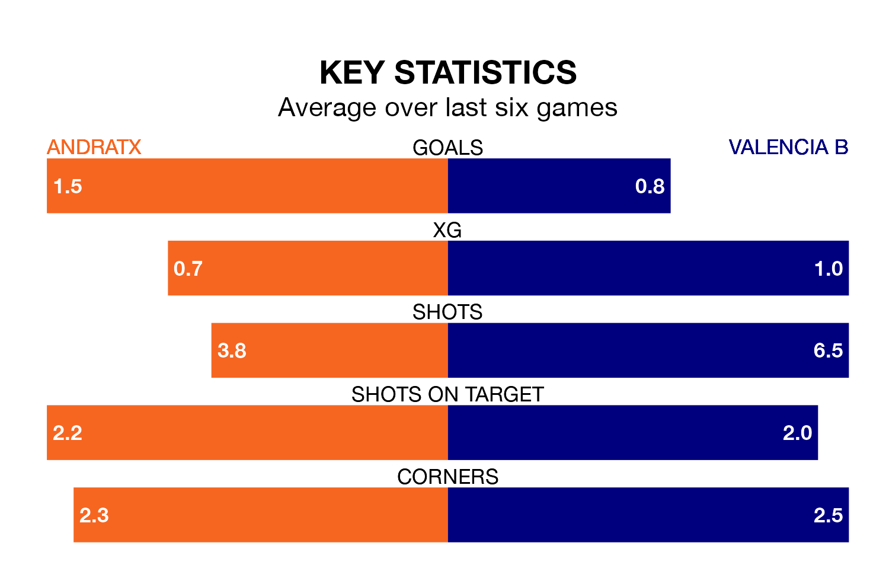

Valencia B make the journey to the Estadio Sa Plana to play Andratx on early Sunday looking to pick up points to end their three-game losing streak.
Valencia B's struggles have left them with just four points from their last six Segunda División RFEF Group 3 matches, while their opponents have earned 10 from a possible 18.
Valencia B are 16th in the table after 17 games, of which they have won four and drawn five, earning 17 points.
Andratx are eight places ahead of the visitors in eighth, with six wins and five draws putting them on 23 points.
With 19 goals in 17 games so far this season, the home side are scoring at below the league average rate with 1.1 goals per game. And they are conceding at an average rate, letting in 21 goals at a rate of 1.2 per game.
Valencia B, meanwhile, are average scorers, with 1.2 goals per game. They have conceded 1.4 goals per game.
Andratx's last match was on January 7, a 4-1 loss against UE Sant Andreu.
Valencia B lost 3-1 against Atlético Saguntino last time out, also on January 7.
Updated: 13:38 (UTC), 10/01/24